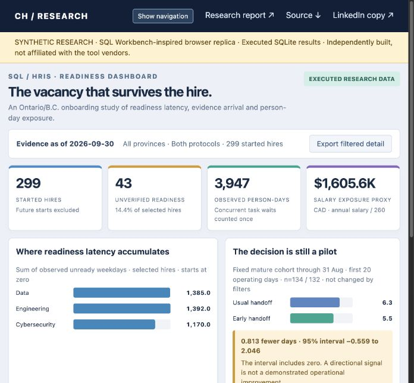
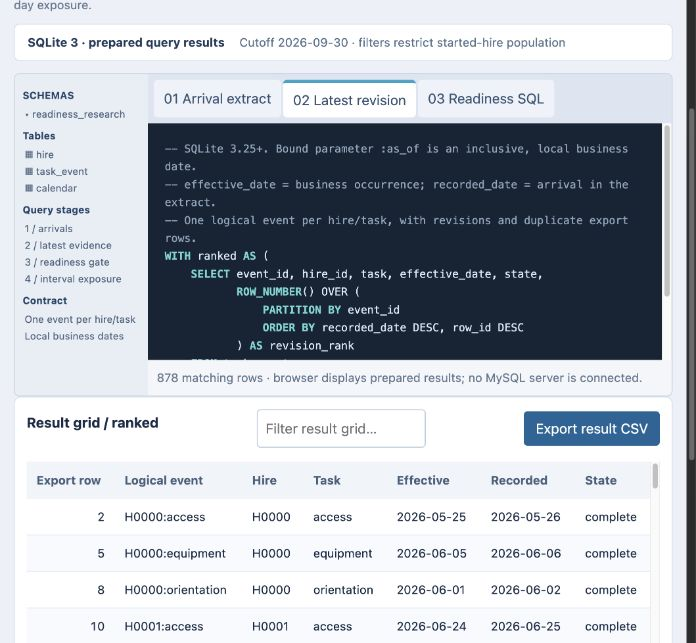
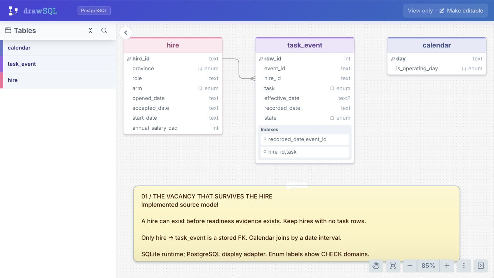
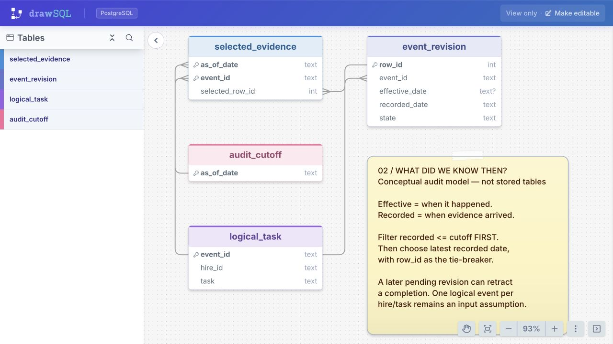
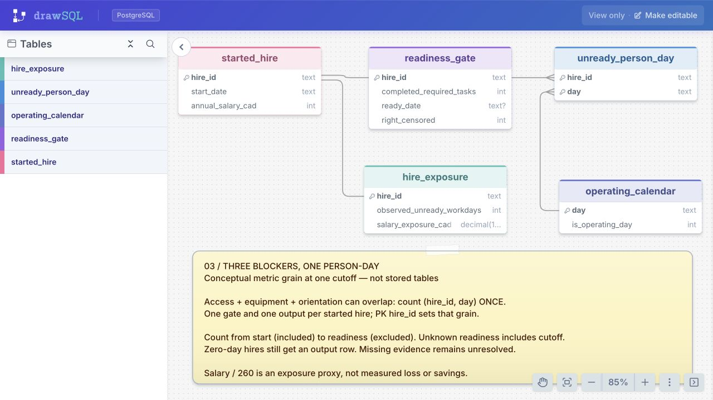

← Interactive dashboardBeyond Time-to-Fill: Onboarding Readiness and HR–IT Handoffs
The vacancy that survives the hire · Manvir Singh Judge · An end-to-end visual walkthrough
Actual captures of the independently built browser interface; DrawSQL images, where present, were captured in DrawSQL. Synthetic data throughout. Screenshots show selected viewports; use the interactive dashboard for the full grids and source panes.01 / Recruitment closure versus operational readiness
The management view separates started hires, unresolved evidence, unique person-days and a salary-based exposure proxy. The fixed mature-cohort comparison uses a common 20-operating-day window. Its interval crosses zero; the correct recommendation is to test the handoff prospectively.

Download image
02 / Reconstruct the evidence before aggregating it
The latest-revision stage ranks each logical event by recorded date and export-row tie-breaker. The displayed 878 task-event records are a different grain from the 299-hire result. The result grid is prepared from executed SQLite analysis; no MySQL server is connected.

Download image
03 / The implemented data contract
Actual DrawSQL capture: hire, task_event and calendar. The hire-to-event relationship preserves revision history; the calendar supplies the operating-day denominator. The PostgreSQL import adapter is a visual representation of the implemented SQLite schema.

Download image
04 / Two clocks, two different questions
Conceptual teaching model created in DrawSQL. Effective date describes the business event; recorded date determines what the analyst could have known. These teaching entities explain the query and are not extra production tables.

Download image
05 / Count exposure once
Conceptual DrawSQL model of the readiness gate and unique hire-day exposure. Overlapping prerequisite waits must not be added as if they were separate people. The DEMO-01 fixture reproduces 3, 5 and 5 person-days as the evidence cutoff changes.

Download image